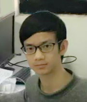

Xiaoyu Li (李小雨)Ph.D. Candidate
Room 4204, Vision and Graphics Laboratory, Academic Building |
 |
| 2013-2017 |
Bachelor of Engineering in Electronic Information Engineering Huazhong University of Science and Technology |
| 2017-present |
Ph.D. Student in Electronic and Computer Engineering Hong Kong University of Science and Technology |